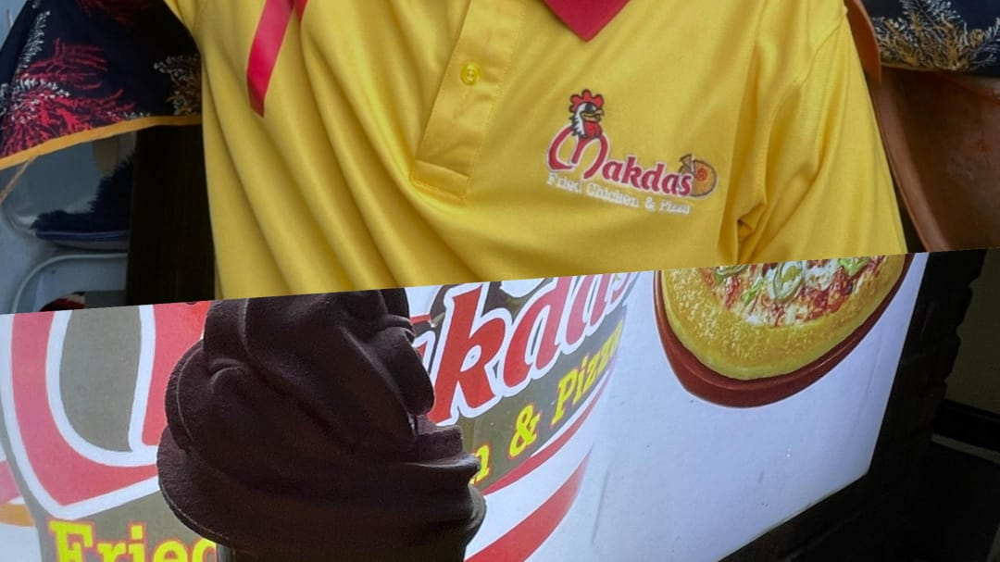
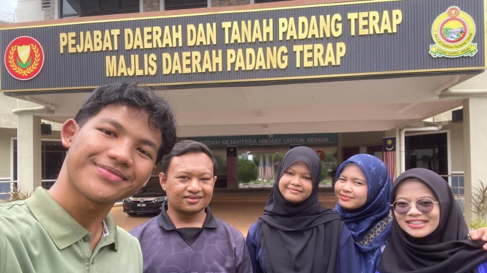

Here’s a brief overview of my professional experience and internships so far.

August 2024 - September 2024 | Cyberjaya, Selangor
During my 2-month semester break, I worked as a cashier at Makdas Fried Chicken & Pizza. This experience taught me the importance of customer service, handling cash transactions efficiently, and maintaining a friendly and professional attitude under busy restaurant conditions.

August 2025 - September 2025 | Majlis Daerah Padang Terap, Kuala Nerang, Kedah
I completed my internship under the Jabatan Khidmat Pengurusan at Majlis Daerah Padang Terap. I gained hands-on experience in office administration, document management, and supporting the local council in various operational tasks. This role enhanced my organizational and professional skills within a formal work environment.